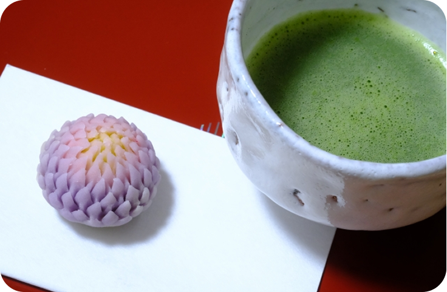
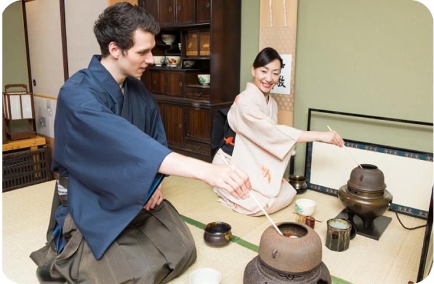
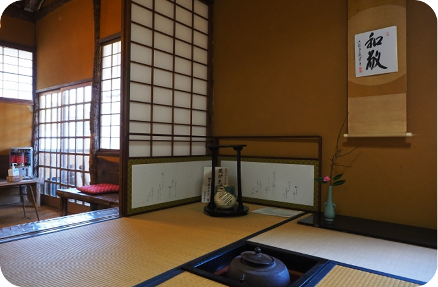

茶道体験コースのご案内
目的に合わせて選べる、3つの茶道体験
初めての方から本格的に学びたい方まで、それぞれに合った茶道体験をお選びいただけます。
ベーシックコース （30分）

- 作法や茶道具などの説明ののち、季節の和菓子を楽しみます。
- 講師が茶わんと茶筅を使ってお茶を点てる様子を目の前で見学。湯の音や所作の静けさを 感じてもらいます。
- 点てたお茶をゆっくり味わいます。茶碗の持ち方や正面も丁寧に説明します。
- 質問タイム＆写真撮影
茶道の雰囲気を、やさしく体験したい方向け
自分で点てるコース （60分）

- 床の間、掛け軸の意味などをコンパクトに紹介後、和菓子を楽しんでいただきます。
- 講師が茶筅の動かし方やリズムを説明と共にお茶の点て方をデモンストレーションします。
- 一人ずつ茶筅を持ってお茶を点てます。丁寧にアドバイスしながら進めていきます。茶碗を回す作法も学びます。
- 点てている姿や茶道具との写真など、自由に撮影できます。
せっかくなら「自分でお茶を点ててみたい！」方向け
本格コース （90分）

- 茶室のしつらえと共に「今日の茶席のテーマ」を解説します。なぜこの茶碗、花なのか等、 茶道の奥深さに触れる時間です。
- 和菓子の由来や形に込められた季節感など、文化背景を紹介しつつ味わっていただきます。
- 講師による一連の点前を見学後、ご自身でお茶を点ててもらいます。抹茶をゆっくりいただいた後は、茶道具の鑑賞タイム。
- 写真撮影も自由に行えます。
茶道の美意識や詫び寂びまで深く感じたい方向け
一期一会の心を大切に、皆様のお越しをお待ちしております。